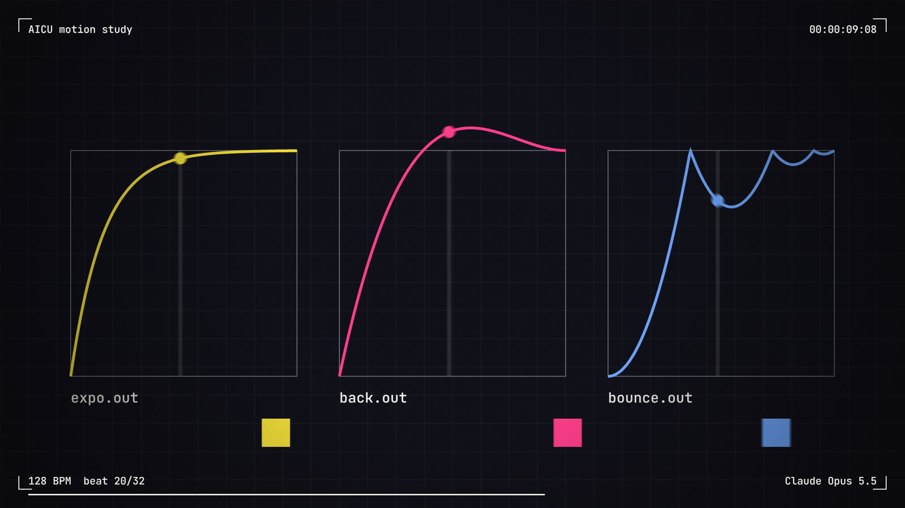
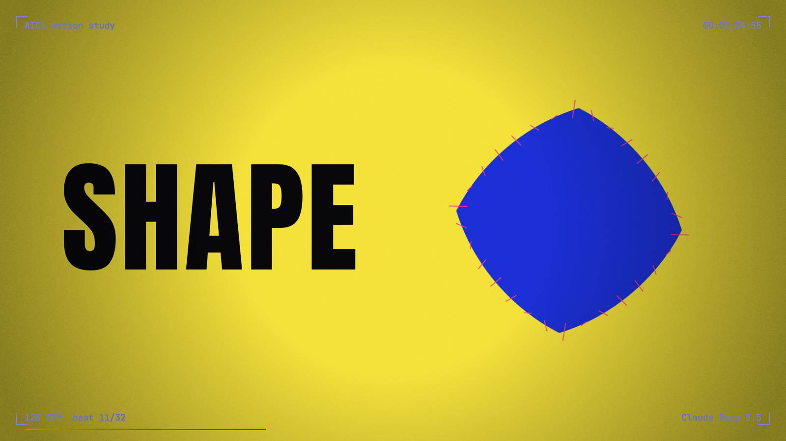
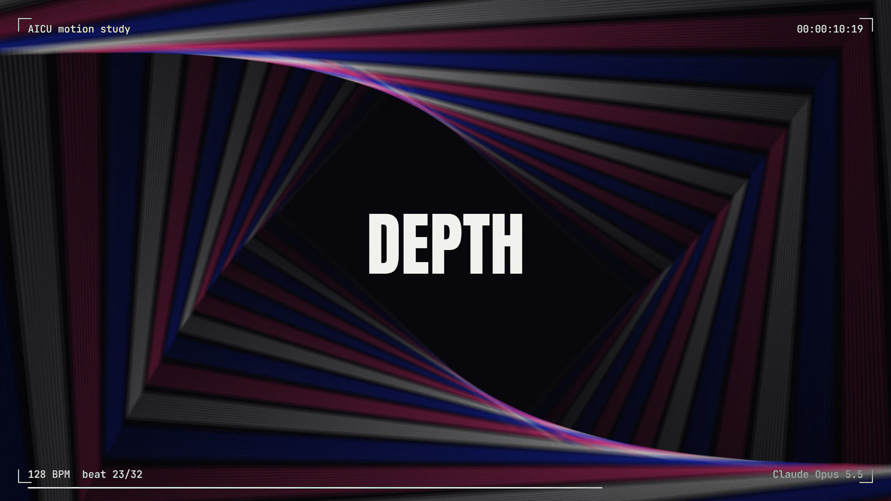
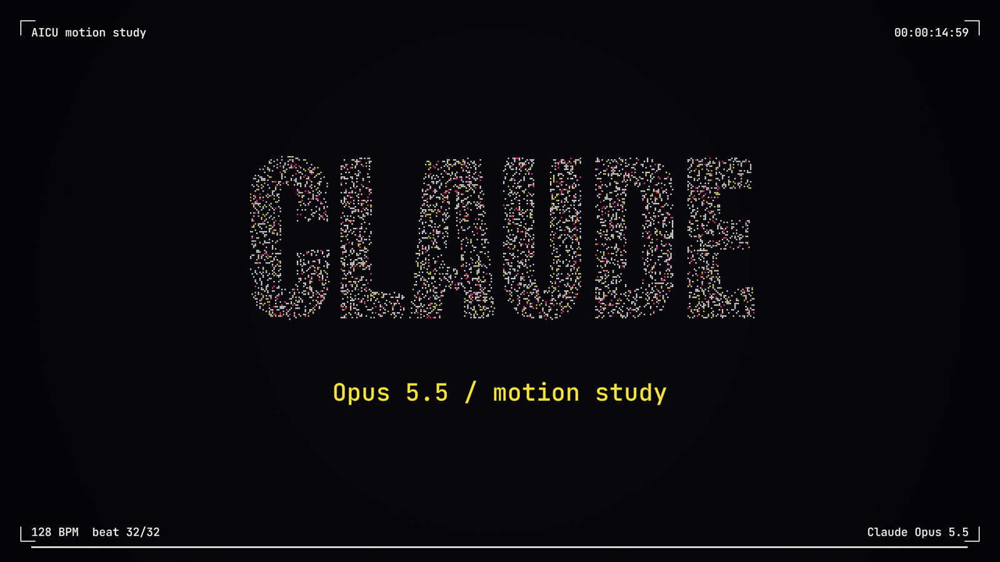
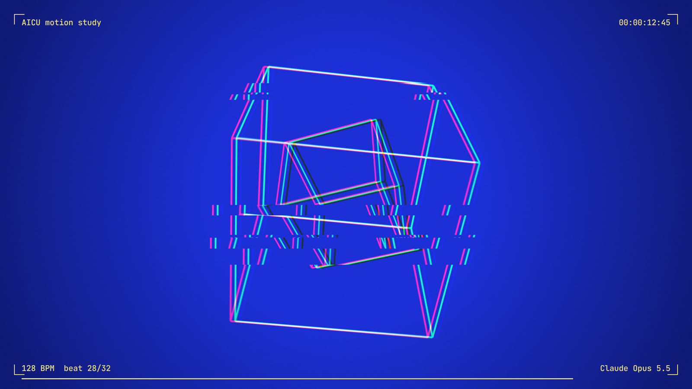

15秒、900コマ、素材ファイルはゼロ。画像も音源も使わず、HTMLとPythonのコードだけで、映像と音楽がぴったり噛み合ったモーショングラフィックスができあがりました。作ったのは Claude Opus 5.5 です。
見てのとおり、キックが鳴り始める瞬間に文字が入り、小節の頭で場面が切り替わり、爆発の直前には一瞬の無音があります。人間の編集者がタイムライン上で合わせたように見えますが、タイミングを手で合わせる作業は一度もしていません。この記事では、そのしくみをコードを引用しながら解説します。
どう頼んだのか
先に、別のセッションで Opus 5.5 に「どうやって作ったのか」を説明させた文章がありました。「index.html で絵を描き、render.py で900コマを撮り、make_audio.py で音楽を計算で作り、最後に合体する」という全体像と、拍・イージング・粒子・音作りの考え方を、非エンジニア向けにまとめたものです。
その文章を渡したうえで、依頼はひとことだけ。「Opus5.5でコード生成してみて」。
Opus 5.5 は、映像の index.html、書き出しの render.py、音楽の make_audio.py、一括実行の build.sh の4本を書きました。さらに、Claude の作業環境（コード実行つきのチャット）で実際に書き出しを実行し、コマを並べた確認用の一覧画像を自分で見て、見つけた不具合を直してから動画を渡してきました。この「自分で見て直す」過程は、あとの節で紹介します。
「リズム感」の正体は、拍の表
タイトルに「リズム感」と書いたのは、テンポの取り方が最初から音楽家の発想になっていたからです。コードの冒頭はこうなっています。
const BPM = 128, BEAT = 60 / BPM, BEATS = 32, FPS = 60;
// 128BPM × 32拍 = 15秒。60fps なら 900コマ128BPM では1拍が0.46875秒で、32拍（8小節）でちょうど15秒になります。15秒という尺が先にあったのではなく、「8小節の曲」として尺が決まっているわけです。映像の中身は、時刻を拍に換算した値 b で分岐しています。
const b = t / BEAT; // 秒 → 拍
if (b < 4) { /* 点が拍を刻み、線が伸びる */ }
else if (b < 8) { /* 4拍目で MOVE が滑り込む */ }
else if (b < 16) { /* 丸→四角→三角→星 */ }
// …28拍目で爆発そして音楽側の Python も、同じ拍番号で書かれています。
for b in range(4, 28): # 4拍目から4つ打ちのキック
add(kick_bus, b, kick(), gain=0.9)
add(bus, 24, whoosh(3.75), gain=0.8) # 爆発へ向けて上がっていく音映像と音が「4拍目」「28拍目」という同じ番号を参照しているので、ずれる余地がそもそもありません。全体の構成は次のとおりです。
| 拍 | 映像 | 音 |
|---|---|---|
| 0–4 | 点が拍ごとに脈打ち、線が伸びる | 拍ごとの電子音、「シュッ」 |
| 4–8 | MOVE が滑り込む | キック開始、和音 Am |
| 8–16 | SHAPE／RHYTHM、図形が変形 | ハット、13拍目から1拍おきにスネア |
| 16–20 | グラフエディタ | 和音 G |
| 20–24 | トンネル | 和音 Am |
| 24–27.75 | ワイヤーの立方体、26拍目からグリッチが強まる | 上昇していくノイズ |
| 27.75–28 | 真っ黒 | 完全な無音（約0.12秒） |
| 28–32 | 爆発し、粒子が CLAUDE に集まる | 大きなキックとクラッシュ |
動きの気持ちよさは、数行の数式
文字が「スッと入ってピタッと止まる」感じは、0から1へ進む割合を数式で曲げて作っています。モーションデザインの世界でイージング（緩急）と呼ばれるものです。
expoOut: t => t >= 1 ? 1 : 1 - Math.pow(2, -10 * t), // 速く入って、ゆっくり止まる
backOut: t => { const c1 = 1.70158, c3 = c1 + 1;
return 1 + c3 * (t-1)**3 + c1 * (t-1)**2; }, // 少し行き過ぎて戻る
bounceOut: t => { /* 4区間の放物線で跳ねを表す */ }MOVE には expo、SHAPE には back、RHYTHM には bounce と、言葉の意味に合った動きが割り当てられています。16〜20拍目では、この緩急の曲線そのものをグラフエディタ風に描いて見せます。After Effects などでモーションを作っている人が毎日さわる画面なので、分かる人ほど「おっ」となるはずです。

変形、奥行き、5,000個の粒子
丸→四角→三角→星
形の変形は、どの図形も「周囲を240個の点で表す」ことで実現しています。四角や星は辺の長さに沿って等間隔に240点を打ち直し、出発点を真上にそろえます。あとは同じ番号の点どうしを少しずつ動かすだけで、形が別の形へなめらかに移ります。変形中に見えるピンクの細線は、その対応関係をそのまま描いたものです。
3Dライブラリなしの奥行き
トンネルと立方体は、3Dのライブラリを使っていません。「遠いものほど小さく描く」という遠近法の計算を自前で書いています。立方体なら、8つの頂点を回転させてから次の一行で画面上の位置に直しています。
const k = 900 / (900 + z + 600); // 奥にある点ほど k が小さい＝小さく描く

文字の形に集まる粒子
最後の CLAUDE は、画面に見えないキャンバスに一度文字を描き、その文字の部分にあたる画素を拾って約5,000個の目標点にしています。粒子は28拍目で中心から爆発し、少しずつ時間差をつけて目標点へ集まります。乱数には毎回同じ並びを返す関数を使っているので、何度書き出しても同じ粒子が同じ動きをします。

「映像っぽさ」を足す仕上げ
ここまでの絵はくっきりしすぎていて、そのままではCGの画面に見えます。映像らしさを出すために、4つの処理を重ねています。
モーションブラーは、1コマの中で時刻をほんの少しずつずらして10回描き、平均しています。平均の取り方は「i 枚目を 1/(i+1) の濃さで重ねる」というもので、途中の合計を保持しなくても最終的に全部の平均になります。
for (let i = 0; i < SUB; i++) {
scene(bctx, t_i); // 少しずつずれた時刻で描く
actx.globalAlpha = 1 / (i + 1); // 逐次平均
actx.drawImage(buf, 0, 0);
}グリッチは、赤の成分を右へ、青の成分を左へずらし、さらに画面を横に何本か切ってずらしています。場面の変わり目で一瞬だけかかり、26拍目からは爆発に向けて強まっていきます。フィルムの粒子は薄いノイズ画像を毎コマ違う位置に重ねたもの、周辺の暗さは放射状のグラデーションです。
四隅のタイムコードや拍カウンターは「差の絶対値」で重ねる合成（difference）で描いているため、黒・青・黄色のどの背景に切り替わっても読めます。ただし、背景が中間のグレーに近いと文字も灰色になって読みにくくなるので、万能ではありません。

音楽も、波の計算で作っている
音声ファイルも、サンプル音源を一切使わずに作っています。
キックは「高いところから一瞬で下がる低音」です。周波数を時間とともに指数関数で下げるだけで、ドンという音になります。
f = 44 + 150 * np.exp(-t * 32) # 194Hz から 44Hz へ急降下
s = np.sin(2 * np.pi * np.cumsum(f) / SR) * np.exp(-t * 9)ハットやスネア、「シュッ」という効果音は、ザーッという雑音から不要な帯域を削って形を整えたものです。和音は、ほんの少しずつ音程をずらしたノコギリ波を7本重ねる「スーパーソー」で、Am→F→C→G と進みます。左右で波の位相を変えているので、ヘッドホンで聴くと音が横に広がります。
クラブ音楽らしいうねりを出しているのがサイドチェインです。キックが鳴るたびに、それ以外の音を一瞬だけ小さくしています。
duck = 1 - 0.75 * np.exp(-since / 0.09) # since = 直前のキックからの経過秒そして27.75拍目から28拍目まで、4分の1拍（約0.12秒）のあいだ音を完全にゼロにしています。映像も同じ区間で真っ黒になります。何もない一瞬を挟むことで、直後の爆発が大きく聞こえます。
書き出しのしくみ
render.py は、画面を持たない Chrome（Playwright 経由のヘッドレス Chromium）を裏で起動します。ページに「このコマを描いて」と頼み、返ってきた PNG 画像を、そのまま ffmpeg に流し込みます。これを900回くり返すと MP4 ができます。
for f in range(900):
url = page.evaluate(f"renderFrame({f})") # ブラウザ側で1コマ描画 → PNG
ffmpeg.stdin.write(base64.b64decode(url.split(",", 1)[1]))ブラウザの再生速度に頼らず「何コマ目か」を指定して描かせるので、重い処理を入れてもコマ落ちしません。書き出しにかかる時間は解像度とブラーの回数でほぼ決まります。Claude の作業環境（CPU 1コア）では、960×540・ブラー3回で900コマが約110秒でした。1920×1080・ブラー10回の本番設定は、画素数が4倍、描画回数が3倍強になるので、手元のマシンで数分から十数分を見込んでください。
AIが自分で見つけて直したバグ
最初の書き出しには不具合がありました。爆発の前に強めていくグリッチの量を、Opus 5.5 は「26拍目から27.75拍目にかけて0→1」という式で書いていました。ところがこの式は27.75拍目を過ぎても1のまま張り付くため、28拍目以降も最大強度のグリッチがかかり続け、最後の CLAUDE が赤と青にずれて読めなくなっていたのです。
Opus 5.5 は書き出した動画から十数コマを切り出して一覧画像にし、それを見てこの問題に気づきました。原因の式を特定し、「26拍目から27.75拍目のあいだだけ」という条件を1行足して修正しています。
生成されたコードは「動いたか」だけでなく「コマを並べて目で見る」検証がよく効きます。映像のように結果が画面に出るものは、確認用の一覧画像を作らせると、人もAIも見落としを見つけやすくなります。
ファクトチェック：「リズム感」はどこまで本当か
タイトルの言葉が何を指しているのかを、コードに照らして確かめておきます。
モデルは音を聴いていない
make_audio.py は音を読み込むプログラムではなく、音を書き出すプログラムです。映像と音楽は、どちらも同じ拍番号の表から作られています。音と映像が合うのは、Opus 5.5 が音を聴いて合わせたからではありません。同じ表から両方を作っているので、ずれようがないのです。
この記事でいう「リズム感」は、時間を拍で数えて設計する発想のことです。音を聴き取る能力のことではありません。また、Opus 5.5 が作業中に確かめたのはコマを並べた画像で、音声は確かめていません。
拍で書く発想は、どこから来たか
最初に渡した説明文には、すでに「拍」の考え方が書かれていました。そのため今回の実験だけでは、Opus 5.5 が自分から拍で設計したとまでは言えません。ほかのモデルと同じ依頼で比べてもいないので、タイトルの「ついに」は筆者の実感です。検証して確かめた差ではありません。
テンプレートを流用していないか
Remotion のような動画用のフレームワークは使っていません。依存しているのは Playwright・NumPy・ffmpeg だけです。一方で、「コマ番号を指定して1コマずつ描き、画面を持たないブラウザで撮る」という書き出し方は、Remotion などと同じ考え方です。
コードの細部には、よく知られた部品がそのまま入っています。
| 部品 | 出どころ | 一致の程度 |
|---|---|---|
| イージング（expo・back・bounce・inOutCubic） | Robert Penner のイージング式。書き方は easings.net のソースと同じ形 | 定数と変数名（c1 = 1.70158、c3 = c1 + 1、7.5625、2.75）まで一致。同じ式でも tween.js は変数名が違うので、easings.net の系統と分かる |
シード付き乱数 rng() | mulberry32（Tommy Ettinger 考案、パブリックドメイン）。JavaScript 版は bryc のまとめの形 | 定数 0x6D2B79F5 とシフト量まで一致 |
| 曲線の名前（expo.out など） | GSAP の命名 | 名前だけ |
| モーションブラー（1コマを何回も描いて平均、シャッター角） | Processing の GIF 作家 beesandbombs のモーションブラーのテンプレート（解説）と同じ考え方 | 考え方と「シャッター角」という変数の役割が一致 |
| 文字の画素から粒子を作る | Mamboleoo のチュートリアルなど | 「不透明度が128を超える画素を拾う」という判定まで一致 |
| 形の変形（周長を等分した点どうしを補間） | flubber、GSAP の MorphSVG と同じ問題の、最も素朴な解き方 | 考え方だけ |
| 赤青のずれ、フィルム粒子、周辺減光 | three.js の RGBShift・GlitchPass・Film・Vignette など、定番のポストエフェクト | 考え方だけ。Canvas 2D で書き直している |
| キック、スネア、ハット | Sound On Sound の連載 Synth Secrets（バスドラム、スネア）、Web Audio でのドラム合成 | 考え方だけ。コードは独自 |
| スーパーソー | Roland JP-8000。Adam Szabo の解析論文 | 「7本のノコギリ波」という本数だけ一致。ずらし幅は独自 |
この作例に固有の行（拍区間を0〜1に直す prog()、拍ごとの脈動 pulse()、glitchAmount()、サイドチェインの式など）を GitHub のコード検索にかけましたが、一致するものはありませんでした（2026年9月27日）。GitHub のコード検索は公開リポジトリの既定ブランチしか対象にしないので、これで「元になった作品が存在しない」とまでは言えません。
まとめると、この作例は1本のテンプレートを流用したものではありません。何十年も使われてきた定番の部品を、「拍の表」という骨組みに組み立てたものです。部品の数式は昔からあります。新しいのは組み立て方と、15秒の中への割り振りです。
「HTML で描いて動画に書き出す」という枠組みそのものにも、よく知られた先行例があります。Remotion（React）、Motion Canvas、CCapture.js、timecut、canvas-sketch などです。いちばん近いのは、HeyGen が Apache-2.0 で公開している hyperframes（“Write HTML. Render video. Built for agents.”）でしょう。AI エージェントに HTML で動画を書かせる前提で作られており、曲の拍の検出や、After Effects 方式のモーションブラーも備えています。ただし、hyperframes のエージェント向け指示書でいう beat は主に「場面」の意味で、音楽の拍とは別物です。今回のコードは、こうしたフレームワークを1つも読み込まずに同じことを数百行で書いています。
数式は線形だけではない
コード中の「動きを決める式」を形で分けると、次のようになります。直線的に動くもの（線形）は、実は少数派です。
| 式の形 | コード中の例 | 効き方 |
|---|---|---|
| 線形 | lerp(a, b, t)、拍区間を0〜1に直す prog() | すべての動きの「進み具合」の土台。これを下の式で曲げる |
| 逆数 | 立方体の遠近 900 / (900 + z + 600)、トンネル f / (z * 60)、ブラーの逐次平均 1 / (i + 1) | 遠いほど小さい。奥行きは逆数で作られている |
| 指数 | expoOut、拍の脈動 exp(-frac(b) * 6)、キックの音程 44 + 150 * exp(-t * 32)、サイドチェイン 1 - 0.75 * exp(-since / 0.09) | 「ドン」と立ち上がってすっと減る。打楽器と動きの減衰が同じ形をしている（Inigo Quilez の小さな関数集にある impulse と同じ発想） |
| 多項式 | backOut（3次）、inOutCubic、上昇ノイズの音量 u ** 2、グリッチの強まり prog(...) ** 2 | 行き過ぎて戻る、じわじわ加速する |
| 区分的な放物線 | bounceOut（4区間） | 跳ねるたびに低く、間隔も短くなる。After Effects の式で有名な Dan Ebberts の解説が、バウンスを「減衰する正弦波」ではなく放物線の列で作る理由を説明している |
| 飽和 | tanh(mix * 1.3)、clamp() | 音を柔らかく潰す、値をはみ出させない |
| 周波数応答 | ローパス 1 / sqrt(1 + (f / fc) ** 4) | 2次のバターワース特性の振幅そのもの。逆数とべきの組み合わせ |
| べき（対数スケール） | 音名から周波数 440 * 2 ** ((n - 69) / 12)（MIDI の標準式）、マスター音量 10 ** (-1 / 20) | 人の耳が対数で聞くことに合わせる |
| 三角関数 | 立方体・トンネルの回転、揺れ | 回転と周期的な揺れ |
ブラウザで動かしてみる
記事に使った index.html は、ブラウザ上でもリアルタイムに再生できます。下のボタンで起動すると、画質を下げたプレビューが始まります。画面をクリックすると音楽つきで頭から再生します。
手元で書き出すには
4本のファイルをまとめてダウンロードできます。Python 3 と ffmpeg が入っていれば、次のコマンドで本番画質の動画ができます。
ソース一式（zip）をダウンロードpip install playwright numpy
playwright install chromium
./build.sh # 1920×1080・ブラー10回 → final.mp4
./build.sh --scale 0.5 --sub 3 # まず試すなら軽い設定で文字は Google Fonts の Anton と JetBrains Mono を読み込んでいます。ネットワークにつながっていない環境では代わりのフォントで描かれ、CLAUDE の粒子の形も少し変わります。
手持ちの曲に合わせるなら：JIZURA との違い
この作例は、手持ちの MP3 には合わせられません。音楽を作る側のプログラムで、テンポは128BPMに固定され、拍の位置は計算で決まります。曲を読み込む処理がそもそもありません。
既存の曲に合わせるには、曲の中から拍を見つける処理が必要です。それを備えている例に、hakoniwa 氏が MIT ライセンスで公開している JIZURA（字面）があります。歌詞を入れると文字PV（リリックモーション）を組み立てるブラウザアプリです。曲を読み込むと拍を検出し、カットの切れ目を拍に寄せます。
JIZURA の拍検出は、曲を1秒50コマに区切って高音寄りの音量の立ち上がりを拾います。その立ち上がりが何秒おきに繰り返されるかを 70〜180BPM の範囲で調べ（自己相関）、テンポと1拍目の位置を決めています。テンポを決める部分を引用します。
// tempo via autocorrelation (70..180 BPM)
for (let lag = minLag; lag <= maxLag; lag++) {
let s = 0; for (let f = lag; f < n; f++) s += onset[f] * onset[f - lag];
const bpm = 60 * rate / lag;
const w = Math.exp(-0.5 * Math.pow(Math.log2(bpm / 125) / 0.7, 2));
s *= w; scores[lag] = s;
if (s > best) { best = s; bestLag = lag; }
}出典：852wa/JIZURA src/10_audio.js（© 2026 hakoniwa、MIT License）
注目したいのは w の行です。見つかった周期に「125BPM からどれだけ離れているか」で重みをかけています。これは、Dan Ellis の論文 “Beat Tracking by Dynamic Programming”（2007）の式(6)と同じ形です。この論文は、人がテンポを感じるときには 120BPM 前後に偏りがあるとして、対数の時間軸でガウス分布の重みをかけています。音楽解析ライブラリ librosa の beat_track が start_bpm=120 を既定値に持つのも同じ系譜です。1拍の周期は、半分や倍の周期でも同じくらい強く相関が出ます。そのどれを採るかを、「たぶんこのくらいのテンポだろう」という仮説で決めているわけです。
求まるのは一定間隔の拍の並びです。テンポが揺れる曲は、手動のタップ同期や、LRC 形式のタイムスタンプで補う作りになっています。
BPM は決めうちか、仮説か
ここで、両者の立場がはっきり分かれます。
- この作例は BPM の決めうちです。
BPM = 128と書き、曲のほうをそれに合わせて作ります。推定も仮説もありません。 - JIZURA は仮説つきの推定です。曲は与えられたもので、そのテンポを「125BPM 前後だろう」という事前の仮説のもとで推定します。
モデルが音を聴いていないということは、裏を返せば、拍の時刻さえ分かればどんな曲にも同じ設計が使えるということです。拍の時刻の手に入れ方は、曲の素性によって3通りあります。
| 曲の素性 | 拍の時刻の手に入れ方 | ずれの心配 |
|---|---|---|
| BPM が分かっている（打ち込み曲、クリックに合わせて録った曲、ストック音源の表記など） | BPM と1拍目の位置を書くだけ。JIZURA の beatGrid(bpm, offset, duration) と同じ計算 | ほぼない。1拍目の位置合わせだけ |
| MIDI がある | MIDI のテンポ情報から拍の時刻を計算する（Python の pretty_midi の get_beats()、JavaScript の @tonejs/midi など） | ない。途中でテンポが変わる曲にも対応できる |
| MP3 などの音声しかない | 拍を推定する（JIZURA、librosa、madmom、aubio、Essentia、ブラウザなら web-audio-beat-detector、bpm-detective など） | 推定しだい。倍・半分のテンポに読み違える、テンポの揺れについていけない、などが起きうる |
| この作例 | JIZURA | |
|---|---|---|
| 音 | コードで作る（出力） | 手持ちの曲を読み込む（入力） |
| 拍の決め方 | 128BPM と書く | 曲から自動検出、BPM の手入力、タップ同期 |
| ずれない理由 | 同じ表から音と映像を作るので、しくみ上ずれない | 検出の精度しだい。テンポが揺れる曲では一定間隔の拍とずれうる |
| 演出 | この1本のために書いた専用のコード | 707の部品と24のスタイルを組み合わせ、シードを変えるたびに別の構成になる |
| 向いている用途 | 尺も音も自分で作るジングル、オープニング | 既存の曲の歌詞動画 |
| 書き出し | ヘッドレス Chromium → ffmpeg | ブラウザ内（WebCodecs）で MP4 |
おもしろいことに、JIZURA も mulberry32 の乱数と、Penner 系のバウンスの式（7.5625、2.75）を使っています。どちらも同じ定番の部品箱から組み立てられている、ということです。JIZURA のリポジトリが作られたのは2026年9月23日で、この記事の数日前です。同じ時期に、まったく違うアプローチで「拍に合わせて動く文字や図形」を作っている人がいます。筆者自身も含めて、こうした道具を作っている人は少なくありません。
この作例を手持ちの曲で動かすなら、上の3通りのどれかで拍の時刻の並びを求めます。そのうえで、b = t / BEAT の1行を「時刻 → 拍番号」の変換（拍の時刻の並びから補間する）に置き換えれば、場面の分岐はそのまま使えるはずです。make_audio.py は要らなくなります。これはまだ試しておらず、見通しです。
拍の表を書き換えれば、別の映像になる
この作例のいちばんの価値は、映像そのものより「拍の表」という設計にあると考えています。場面の分岐と文字、和音の進行を書き換えれば、イベントのオープニング、スポンサー紹介のバンパー、番組のジングルなどを、同じしくみで何本でも作れます。BPM を変えれば尺も自動で変わり、音と映像は常にそろったままです。
AICU では、こうした「コードで作る映像と音」を、クリエイター向けの講座や制作の現場で使える形にしていきます。今回のソースを使って何か作ったら、ぜひ見せてください。